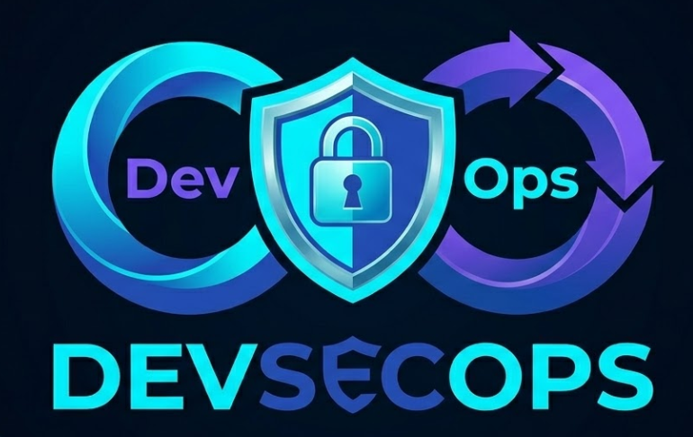

// 04 · Portfólio Técnico
Projetos em Destaque
Meus laboratórios práticos publicados no GitHub
Infraestrutura como Código · LocalStack
EC2 Cloud Engineering Lab
Eliminação de hardcoding e modularização avançada no Terraform. Provisionamento de servidor web em ambiente AWS simulado com LocalStack — flexibilidade e segurança sem custo de infra.
Destaque: Arquitetura desacoplada e esteira CI/CD com custo zero.
Ver no GitHub →
DevSecOps · Cloud Security
S3 DevSecOps Lab
Esteira DevSecOps com 3 estágios: Lint, Security Scan e Plan. Validação de segurança com tfsec antes de qualquer apply, garantindo conformidade automatizada.
Destaque: Criptografia AES256 e bloqueio de acesso público via módulos reutilizáveis.
Ver no GitHub →
CI/CD · Kubernetes · GitOps
Baleia GitOps
Pipeline de CI nativo de container em cluster Kubernetes local (Kind). Build seguro sem Docker-in-Docker, versionamento dinâmico de imagens Go e push para Docker Hub.
Destaque: Build seguro (sem Docker-in-Docker) e versionamento dinâmico de imagens Go.
Ver no GitHub →
Multi-Cloud · Configuration Management
Deploy de Site Estático · GCP + Ansible
Fluxo completo de IaC para provisionar recursos no Google Cloud e gerenciar configuração automaticamente via Ansible. Do zero ao servidor web funcional em um pipeline.
Destaque: Integração entre provisionamento (Terraform) e configuração de software (Ansible).
Ver no GitHub →
Observabilidade · AWS · Monitoramento
AWS CloudWatch & CloudTrail Lab
Laboratório de observabilidade e auditoria na AWS. Provisionamento de instâncias EC2 com alarmes de CPU via CloudWatch e logs de auditoria criptografados com CloudTrail — tudo como código com Terraform.
Destaque: Observabilidade completa com alertas proativos e trilha de auditoria criptografada.
Ver no GitHub →
Serverless · Python · AWS Lambda
Processador Automático CSV → JSON
Pipeline serverless orientado a eventos na AWS. Um upload de arquivo CSV no S3 dispara automaticamente uma função Lambda que converte, valida e salva o resultado em JSON em outro bucket — sem servidor, sem custo idle.
Destaque: Arquitetura event-driven — do upload ao JSON processado sem nenhuma intervenção manual.
Ver no GitHub →